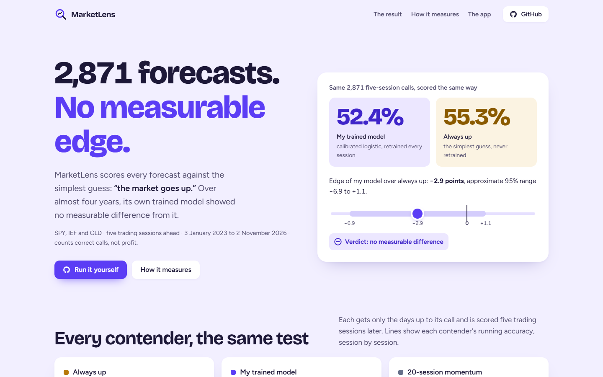
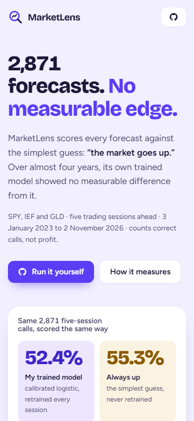

A · Lila eredménytábla
A te referenciád stílusa: világos lila-fehér, kártyák, nagy számok, kis grafikonok.
- Erőssége
- Ismerős, barátságos, azonnal olvasható. Az edge-sáv megmutatja, hogy a 0 a tartományon belül van. A grafikon fölött az egérrel napra pontos értékek.
- Kockázat
- Ez áll legközelebb egy átlagos fintech-oldalhoz, kevésbé emlékezetes. A hero illusztráció helyett az app valódi képernyője van.